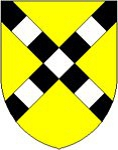

Antavla
15968850 Claus Grubendahl
Blev ca 47 år.

Far:
Henning Grubendahl (1344 - 1391)
Mor:
Cecilie Jensdatter Grubbe til Gunderslevholm (1340 - >1412)
Född:
omkring 1370 Prästö, Danmark.
[1]
Danmark
Död:
1417.
[1]
Barn med
15968851 Juliane Lunge
Barn:
Ailed Clausdatter Grubendahl (1334 - 1404)
Personhistoria
Årtal
Ålder
Händelse
1370?
Födelse omkring 1370 Prästö, Danmark
[1]
1391
Fadern
31937700 Henning Grubendahl
dör 1391
[1]
1404
Dottern
7984425 Ailed Clausdatter Grubendahl
dör 1404 Sorö, Danmark
[2]
>1412
Modern
31937701 Cecilie Jensdatter Grubbe til Gunderslevholm
dör efter 1412 Danmark
[1]
>1414
Barnbarnet
3992212 Jens Jensen Rud
dör efter 1414
[2]
1417
Död 1417
[1]
Källor
[1]
wikitree
[2]
Family search